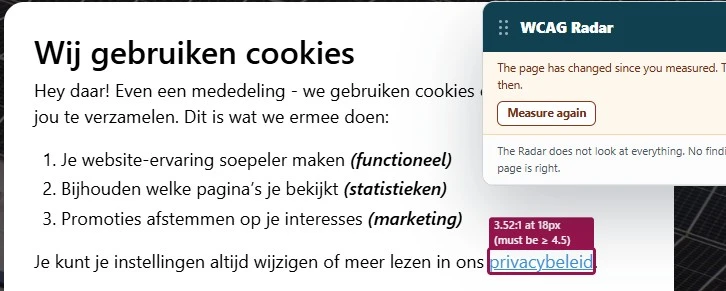

Van de vijftien bevindingen die in de vorige audit op alle pagina's stonden, zijn er dertien opgelost. Het kleurrijke menu heeft nu zwarte tekst in plaats van witte en daarmee genoeg contrast, de iconen in de werkbalk hebben een toegankelijke naam gekregen, de menuknop geeft door of het menu open of dicht staat, de skiplink verwijst naar het begin van de unieke inhoud, en het label "Desktop" op het navigatielandmark is weg. Hieronder staan de twee punten die nog openstaan en één nieuwe bevinding.
#3 - Kleurcontrast van tekst is te laag (tekst kleiner dan 19px)
Deze bevinding is voor de helft opgelost. Het mintgroen (#65BD7D) op wit met een ratio van 2,3:1 komt niet meer voor. Blauw (#198FD9) op wit staat er nog wel, met een contrastratio van 3,5:1. Dat is te weinig voor kleine tekst.

Enkele voorbeelden, en dit is geen volledige lijst:
- de link "privacybeleid" in de cookiemelding wanneer die in hovertoestand is;
- de knoppen "Alles accepteren", "Alles weigeren" en "Keuzes opslaan" in de cookiemelding wanneer die in hovertoestand zijn;
- de opmerkingen met het symbool
*wanneer die in hovertoestand zijn op https://biografienzkg.nl/ en andere pagina's; - de link "info@noordzeekanaalgebied.nl" wanneer die in hovertoestand is op https://biografienzkg.nl/colofon/.
Dezelfde blauwe kleur staat ook op een grijze achtergrond (#E6E6E6). Die combinatie heeft een contrastratio van 2,8:1. Je ziet het in de cookiemelding: klik op de knop "Details bekijken" en daarna op "Noodzakelijk" of een van de andere knoppen in dat gedeelte. De tekst op de knop wordt dan blauw.
Oplossing:
Voor tekst tot 24 px, en voor vetgedrukte tekst tot 19 px, moet de contrastratio minimaal 4,5:1 zijn. Voor grotere tekst is 3,0:1 genoeg. Op https://properaccess.nl/hoe-test-ik-kleurcontrast/ staat een instructie die uitlegt hoe je kleurcontrast test.
#6 - Toetsenbordfocus is niet zichtbaar
Deze bevinding is grotendeels opgelost. In het menu en bij de knop met het pijltje omhoog is de toetsenbordfocus nu zichtbaar. Op de afbeeldingslinks nog niet, bijvoorbeeld op https://biografienzkg.nl/de-basis-het-natuurlijk-landschap/ en https://biografienzkg.nl/de-omgang-met-water/.
Bezoekers die met het toetsenbord navigeren moeten kunnen zien op welke plek van de pagina ze zijn. Anders weten ze niet wanneer ze op Enter moeten drukken om een link te volgen.
Oplossing:
Zorg dat de toetsenbordfocus zichtbaar is op de afbeeldingslinks.
#45 - Een onzichtbaar element krijgt toetsenbordfocusNieuw
Nieuwe bevinding die is ontstaan na het oplossen van een eerder gevonden bevinding.
Op alle pagina's komt de toetsenbordfocus na de link met het huisicoon op een interactief element dat niet te zien is. Het gaat om de link "Terug naar boven" in de werkbalk. Die link staat in de CSS op opacity: 0 en wordt pas zichtbaar als de bezoeker naar beneden scrolt, maar opacity haalt een element niet uit de tabvolgorde. Een bezoeker die met het toetsenbord navigeert komt dus op een link die er niet is, weet niet waar de focus staat, en kan per ongeluk iets activeren.
Hetzelfde gebeurt als de website op een klein scherm wordt bekeken. Dan komt de toetsenbordfocus na de link met het PDF-icoon op interactieve elementen die niet te zien zijn.
Oplossing:
Zorg dat alleen zichtbare interactieve elementen toetsenbordfocus kunnen krijgen. Je kunt de link met display: none of visibility: hidden verbergen in plaats van met opacity: 0, of het attribuut inert op het element zetten zolang het verborgen is.